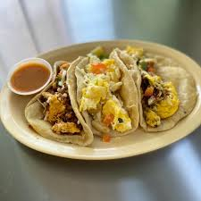

Breakfast Tacos
Homepage

The Dish
This dish comes from my father's roots being raised in Laredo, Texas.
As with many of my dishes it is a combination of cultures and what was locally avalible at the time.
Ingredients
- 1 roma tomato.
- 1 small serrano pepper.
- 1 small potato, skinned.
- 1 small onion. Only half of the onion will be used.
- 1 lb of bacon.
- 1 dozen eggs.
- salt and pepper.
- 1 pack of perffered tortillas.
Instructions
- In a large skillet cook the 1 lb of bacon. Don't drain off all of the grease. Be sure the bottom is still coated.
- Finely chop the tomato, serrano pepper, potato, bacon, and half of the onion. Keep the potato seperated from the other ingredients.
- In the skillet used to cook the bacon, add the finely chopped potato. Cook until translucent and soft.
- In a large bowl beat the eggs and then add the tomato, serrano pepper, bacon, and onion to the mixture. Season with salt and pepper.
- Once potatos are cooked, add egg mixure. Stir frequently to make sure nothing sticks or burns on the bottom of the pan.
- Serve in taco shells.
- The most critical step; ENJOY!